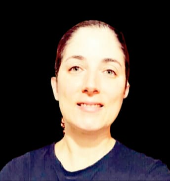

Curriculum vitae de María De Los Angeles Sánchez
Datos personales
Nombre completo:
María De Los Angeles Sánchez
Fecha de nacimiento:
11/04/1976
Lugar de nacimiento:
Lincoln, Buenos Aires
Formacion Academica
2005:
Título de grado:
Farmacéutica y Licenciada en ciencias farmacéuticas.
2001-2002:
Pasantía Laboratorios Bagó
Laboratorio de control de calidad, cátedra de Ensayo y Valoración de medicamentos (Universidad Nacional de La Plata)
2001-2003:
Pasantía Magister en Plantas Medicinales
cátedra de farmacoquímica (Universidad Nacional de La Plata)
2003-2005:
Pasantía Laboratorio de control de calidad
Colegio de Farmacéuticos de la Provincia de Buenos Aires. Buenas prácticas en Preparaciones Farmacéuticas
2005-2007:
Directora técnica farmacia oficinal Arakaki (City Bell, La Plata)
2007-2008:
Directora técnica farmacia oficinal Berri (La Plata)
2007-2008:
Finalista, proyecto en” Tecnologías para la Seguridad”
Secretaría de Ciencia Tecnología e innovación productiva
2011-2015:
Asesora tecnológica
Colegio de Farmacéuticos de La Plata
2015:
Ingreso a la carrera de APU
Analista Programador Universitario, UNLP
2018-2019:
Desarrollo Web Full Stack
Digital House
CURSOS, DISERTACIONES Y ACTUALIZACIÓN PROFESIONAL:
DESARROLLO Y DISEÑO: